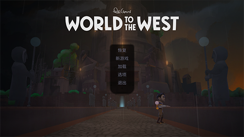

Z-Blog插件：站点信息统计
在系统原有的站点信息的基础上，增加了文章总字数和页面总字数统计；可自定义显示条目。
阅读全部在系统原有的站点信息的基础上，增加了文章总字数和页面总字数统计；可自定义显示条目。
阅读全部欢迎来到我的世界。
欢迎来到欢乐场。
阅读全部一、开考类别
科目名称 科目代码 考核课程代码
网络工程师 41 401、403
数据库工程师 42 404、405
软件测试工程师 43 401、405
信息安全工程师 44 401、403
嵌入式系统开发工程师 45 401、402
阅读全部
阅读全部考试方式：
上机考试，总分50分，与四级其他一门课程合计考试时间长90分钟。
题型：
单选题 10道题 30分
多选题 10道题 20分
阅读全部